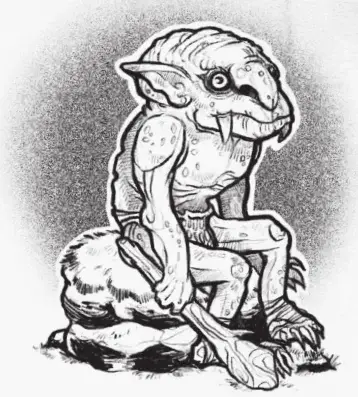

Норкер
Norker
Маленький Гуманоид (Гоблиноид), законно-злой

Класс Доспеха 17 (природный доспех)
Хиты 16 (3к8 + 3)
Скорость 30 футов
| мод | спас | ||
|---|---|---|---|
| СИЛ | 13 | +1 | +1 |
| ЛОВ | 10 | +0 | +0 |
| ТЕЛ | 13 | +1 | +1 |
| мод | спас | ||
|---|---|---|---|
| ИНТ | 8 | −1 | −1 |
| МДР | 8 | −1 | −1 |
| ХАР | 7 | −2 | −2 |
Навыки Атлетика +3
Чувства тёмное зрение 60 футов, пассивное Восприятие 9
Языки Общий, Гоблинский
Опасность 1/2 (100 опыта)
Бонус мастерства +2
Действия
Мультиатака. Норкер совершает одну атаку палицей и одну атаку Укусом.
Укус. Рукопашная атака оружием: +3 к попаданию, досягаемость 5 футов, одна цель. Попадание: 4 (1к6 + 1) колющего урона.
Палица. Рукопашная атака оружием: +3 к попаданию, досягаемость 5 футов, одна цель. Попадание: 4 (1к6 + 1) дробящего урона.
Реакции
Защитное возмездие. Если существо совершает рукопашную атаку оружием против норкера в пределах 5 футов от него, то он может реакцией нанести 4 колющего урона этому существу.
Описание
Жестокие, злобные и ленивые, даже по меркам гоблиноидов, норкеры - выносливые гуманоиды, их длинные острые клыки и толстые костлявые экзоскелеты делают их отличными воинами для армии хобгоблинов. К несчастью для своих потенциальных хозяев, норкеры очень непокорны, агрессивны и склонны к лени, если за ними внимательно не присматривать зорким глазом и рукой, способной быстро осадить их.
Глубинные жители. В древние времена норкеров находили глубоко под землей. Их всегда было не слишком много, А их бог был жестоким, беспощадным тираном, который держал своих детей близко к себе, а внешний мир на расстоянии. Этот давно потерянный бог, возможно, был первым завоевателем Маглубийета, а его последователи - первыми, невольными новобранцами в его походе. Сегодня хобгоблинов раздражает предположение, что такие ленивые и дикие существа, как норкеры, могут претендовать на такую честь. Только по этой причине военачальники хобгоблинов неохотно используют этих существ, предпочитая держать их при себе повсюду в качестве одноразовой рабочей силы в шахтах и карьерах.
Противные, грубые и низкие. Даже гоблины задирают и травят норкеров, поскольку хобгоблины ставят норкеров в нижнюю часть рядов гоблиноидов, однако свирепость норкеров, прочная шкура и острые клыки позволяют им подняться наверх рядов и победить гоблиноидов, которые недооценивают силу и свирепость норкеров. По этой причине норкеры, скорее всего, держатся подальше от своих собратьев. Их природные доспехи и оружие делают их опасными противниками, даже когда они вынуждены выполнять черную работу. Только указание Маглубийета помешало хобгоблинам выследить и уничтожить этих существ.
Наследие ненависти. Учитывая их давнее поражение и ужасное обращение со стороны других гоблиноидов, норкеры создали своеобразную секту почитателей Маглубийет. Они называют его Великим Бичом и верят, что жизнь смертного - жестокое испытание. Те норкеры, чья кожа выдержит любой удар и чьи клыки глубоко вонзятся в их врагов, будут отведены в рай. Для норкеров все остальные существа - враги. Сильных существ можно задобрить рабством и попрошайничеством, в то время как более слабые становятся жертвами клыков и дубинок.